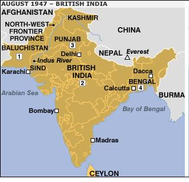

Vài Lời Thưa Trước
Vào khoảng năm 1960, cụ Nguyễn Hiến Lê mua trọn bộ Lịch sử văn minh của của Will Durant[1], bản Pháp dịch do nhà Rencontre - Thuỵ Sĩ xuất bản. Năm 1970, cụ dịch cuốn Lịch sử văn minh Ấn Độ, sau đó cụ dịch thêm các cuốn Lịch sử văn minh Ả Rập, Nguồn gốc văn minh và Lịch sử văn minh Trung Hoa. Bốn cuốn đó đều nằm trong tập I: Di sản phương Đông.
Theo cụ Nguyễn Hiến Lê thì tác giả soạn xong tác tập Di sản phương Đông, tức tập Our Oriental Heritage[2] vào năm 1935[3], lúc đó người Anh còn đô hộ Ấn Độ. Đến ngày 15 tháng 8 năm 1947, Anh trao trả độc lập cho Ấn Độ nhưng tách Ấn Độ thành hai quốc gia: một có đa số dân theo Ấn Độ giáo là Ấn Độ; một có đa số dân theo Hồi giáo là Pakistan, nước này gồm hai phần: phần phía đông Ấn Độ gọi là Đông Pakistan (năm 1971 tuyên bố độc lập, trở thành nước Cộng hoà Nhân dân Bangladesh), phần phía tây Ấn Độ gọi là Tây Pakistan (Cộng hòa Hồi giáo Pakistan ngày nay)[4]. Do vậy ta nên hiểu Ấn Độ trong cuốn Lịch sử văn minh Ấn Độ này gồm cả ba nước Ấn Độ, Pakistan và Bangladesh. Các địa danh được nêu trong sách như Lahore, Karachi, Mohenjo Daro, Peshawer, Sindh… nay đều thuộc Pakistan; xứ Bengal thì gồm một phần là Tây Bengal nay thuộc Ấn Độ, một phần là Đông Bengal nay là nước Bangladesh.

Bản đồ Cachemir
Còn địa danh Cachemir ngày nay, theo như bản đồ[5] ở trên, thì gồm: phần xanh là vùng Kashmiri dưới quyền quản lý của Pakistan, vùng nâu đậm là Jammu và Kashmir thuộc Ấn Độ và Aksai Chin thuộc Trung Quốc. Như vậy nước Ấn Độ trong cuốn Lịch sử văn minh Ấn Độ không những gồm ba nước Ấn Độ, Pakistan, Bangladesh ngày nay mà gồm cả phần Aksai Chin thuộc Trung Quốc nữa.
Xem bản đồ bên trái ở dưới, chúng ta thấy, trước khi bị chia tách vào năm 1947, Ấn Độ không bao gồm Népal vì Anh công nhận nền độc lập của Népal từ năm 1923, nhưng tôi ngờ rằng tác giả xem Népal cũng thuộc về Ấn Độ vì trong Tiết IV – Chương V, tác giả viết: “Ở Ấn Độ nơi nào cũng thấy dấu vết của sự thờ phụng sinh thực khí đó: khi thì là dương vật ở trong các đền ở Népal, Bénarès, vân vân…”[6]. Mà ở Népal thì có các địa danh liên quan đến Đức Phật Thích Ca được đề cập trong sách như Kapilavastu (Ca Tì La Vệ), Lumbini (Lâm Tì Ni)… Vì nguyên tác cuốn Lịch sử văn minh Ấn Độ có nhan đề là India and her neighbors (Ấn Độ và các xứ láng giềng), cho nên ta cũng có thể nói rằng tác giả sắp Népal vào các xứ láng giềng gần xa của Ấn Độ như Afganistan (A Phú Hãn), Tích Lan, Tây Tạng, Miến Điện, Xiêm, Cao Miên, Java… Theo tác giả thì “Khi các tôn giáo Ấn Độ vượt biên giới và các eo biển mà truyền qua Tích Lan, Java, Cao Miên, Thái Lan, Miến Điện, Tây Tạng, Khotan, Turkestan, Mông Cổ, Trung Hoa, thì nghệ thuật Ấn cũng lan tràn vào các xứ đó”[7], và ông dành trọn một tiết để nói về kiến trúc các xứ Tích Lan, Miến Điện, Xiêm, Cao Miên, Java. Ông bảo: “Thật lấy làm lạ ngôi chùa Phật lớn nhất – có vài nhà chuyên môn cho là ngôi đền lớn nhất thế giới nữa – không phải ở trên đất Ấn mà ở trên đảo Java”, tức chùa Borobudur, và “chỉ có một đền Ấn là vĩ đại hơn chùa Borobudur mà đền đó cũng ở xa Ấn Độ, bị rừng rậm che lấp trong mấy thế kỉ”, tức đền Angkor Wat (Đế Thiên) ở Cao Miên[8].


Bản đồ Ấn Độ (năm 1947 và năm 2007)
°
Trong bài Tựa, cụ Nguyễn Hiến Lê không cho biết nhà Rencontre in xong tập Di sản phương Đông (nhan đề tiếng Pháp là Notre Héritage Oriental) năm nào, cụ chỉ bảo: “nhà Rencontre ở Lausanne (Thuỵ Sĩ) cuối năm 1970 mới in xong toàn bộ [Lịch sử văn minh] bản tiếng Pháp”[9], nên ta chỉ có thể tạm đoán rằng bốn dòng sau đây ở cuối bảng Niên biểu lịch sử Ấn Độ là do nhà Recontre bổ sung vì trong bản tiếng Anh không có:
………1935….Sắc lệnh Chính phủ Ấn Độ (thành lập Liên bang Ấn).
1945 – 1946….Hội nghị Simla và hội nghị New Delhi.
………1947….Ấn Độ tách ra thành Hindoustan (Ấn) và Pakistan (Hồi).
………1948….Ấn Độ độc lập – Gandhi bị ám sát.
Ở cuối sách có bảng Danh từ Ấn, Hồi do Pháp phiên âm có lẽ là cũng do nhà Rencontre lập vì bản tiếng Anh không có và vì mục từ Trimurti trong bảng đó được giải thích là: tượng thần Shiva có ba mặt; cách giải thích đó xem ra không phù hợp với lời này của Will Durant: “Người Ấn cho rằng đời sống cũng như vũ trụ, qua ba giai đoạn liên tiếp: sinh, trưởng rồi diệt. Vì vậy có ba thứ thần: thần Brahma, đức Sáng tạo; thần Vichnou, đức Bảo tồn; và thần Shiva, đức Huỷ diệt: đó là Trimurti, tức “ba hình thức” mà tất cả các người Ấn, trừ những tín đồ Jaïn [và Hồi giáo, dĩ nhiên] đều theo”[10].
Ngược lại, trong bản tiếng Anh có nhiều chi tiết mà bản Việt dịch lại không có, ví dụ như hai câu sau đây ở cuối Tiết VI – Chương IX: It was Gandhi's task to unify India; and he accomplished it. Other tasks await other men (Tạm dịch: Đó là nghĩa vụ thống nhất Ấn Độ của Gandhi, và Ngài đã hoàn thành được nghĩa vụ đó. Còn những nghĩa vụ khác thì dành cho những người khác).
Có thể những chỗ thiếu sót đó là do sách in thiếu mà cũng có thể do nhà Rencontre hoặc cụ Nguyễn Hiến Lê lược bỏ. Vì không có bản tiếng Pháp nên tôi tạm đoán như vậy và vì không có bản tiếng Pháp nên tôi tạm xem các chữ được thêm vào trong mạch văn (đặt trong dấu ngoặc đơn), các chú thích không có trong bản tiếng Anh mà có trong bản Việt dịch là do cụ Nguyễn Hiến Lê thêm vào.
Theo “Danh mục sách Nguyễn Hiến Lê” in trong cuốn Mười câu chuyện văn chương thì cuốn Lịch sử văn minh Ấn Độ được nhà Lá Bối xuất bản lần đầu vào năm 1971. Ebook này tôi chép lại từ bản của Nxb Văn hoá Thông tin in năm 2006 và đối chiếu bản tiếng Anh để sửa chữa và bổ sung các chỗ sai sót, và bạn Tuanz dùng bản của Trung Tâm Đại học Sư Phạm TP. HCM in vào 1989 để sửa chữa (trong đó có cả những lỗi do tôi chép sai) và bổ sung thêm; ngoài ra bạn Tuanz còn góp ý để tôi sửa lại một số chú thích mà tôi ghi thêm vào[11]. Xin chân thành cảm ơn bạn Tuanz và xin trân trọng giới thiệu cùng các bạn.
Goldfish
Tháng 12 năm 2010
Chú thích:
[1] Từ cuốn XX, ông bà kí tên chung: Will và Ariel Durant.
[2] Các bạn có thể xem trực tuyến hoặc tải về Bản 4.8 tại http://www.scribd.com/doc/20351263/The-Story-of-Civilization-01-Our-Oriental-Heritage. (Book II: India and Her Neighbors - không kể phần chú thích - từ trang 422 đến trang 683).
[3] Wikipedia bảo tập này xuất bản vào năm 1937.
[4] Đông Pakistan và Tây Pakistan cũng được gọi là Đông Hồi và Tây Hồi.
[5] Các hình ảnh trong ebook nầy đều do tôi sưu tầm trên mạng.
[6] Wikipedia bảo: “Nền văn minh Ấn Độ thời cổ đại bao gồm cả vùng đất ở các nước như: Ấn Độ, Pakistan, Nêpan, Bangladesh ngày nay”.
[7] Chúng ta có thể kể thêm: Bhutan, Lào, Chiêm Thành, Phù Nam. (Goldfish).
[8] Tác giả dành gần bốn trang để viết Cao Miên, mà theo ông thì: “gốc gác phần lớn là Trung Hoa, phần nhỏ là Tây Tạng (…) mà nền văn minh lại gốc Ấn Độ”.
[9] Trên trang
http://cgi.ebay.fr/livre-HERITAGE-ORIENTAL-2-JudTe-Perse-Inde-/370424068036, nhà Ebay rao bán tập Notre héritage oriental 2: La Judée, La Perse, L'Inde, do nhà Rencontre in 1966. Tôi không biết năm 1966 là năm in lần đầu hay là năm tái bản.
[10] Wikipedia cũng giải thích tương tự với Will Dutant: “Trimurti: Gồm ba vị thần tối cao trong Ấn Độ giáo: Brahma là đấng tạo hóa, Vishnu là đấng bảo hộ, còn Shiva là đấng hủy diệt. Cả ba tạo thành bộ tam thần Trimurti”.
[11] Để khỏi rườm, tôi hạn chế tối đa việc chú thích các chỗ sửa sai.